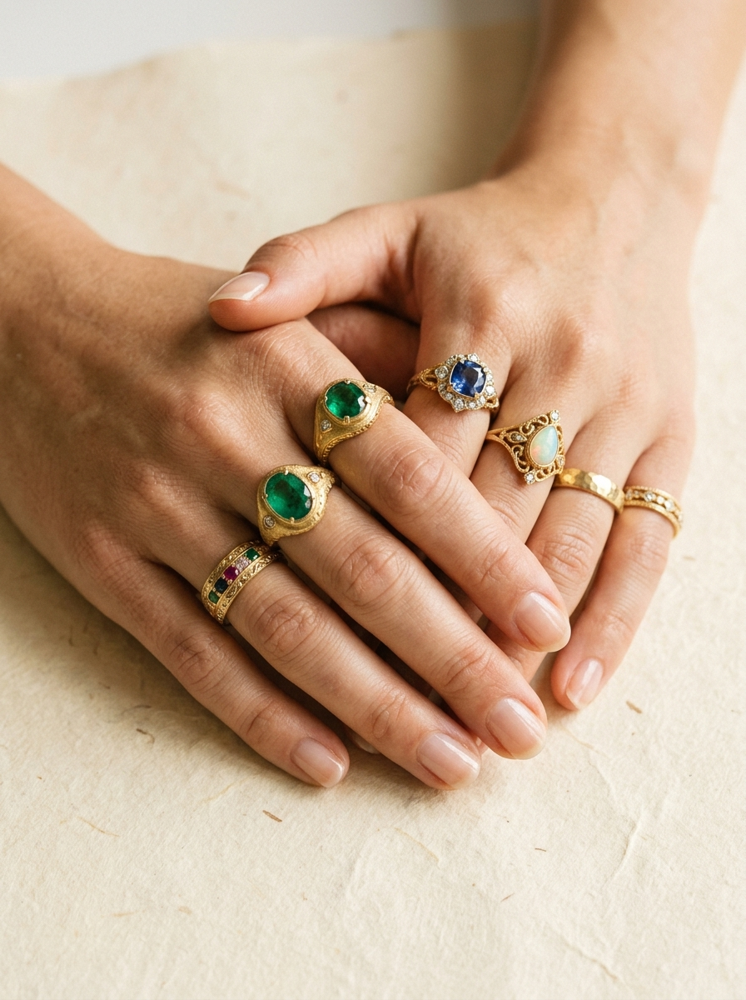

The Heart Behind Kanak Jewellery.
A humble dream born in Maharashtra—bringing timeless royal heirloom ornaments to every bride, festive celebration, and family milestone with effortless elegance and modern comfort.

MUMBAI ATELIER • ESTD. 2024“Every curve of a Kanak ornament is shaped by hand to honor Maharashtra’s regal heritage without the weight, anxiety, or delicate snagging.”
How It Began: The Locked Heritage
Growing up in a traditional Maharashtrian household, our founder Gauri Shinde observed a poignant truth: every family treasured their antique Peshwai Naths and Kolhapuri tode bangles, yet these precious heirlooms spent almost their entire life locked inside steel bank lockers.
Real gold felt excessively heavy, stressful to wear in crowded celebrations, and prone to pulling on delicate earlobes or snagging precious silk Paithanis. For festive occasions like Sakharpuda, Mangalagaur, or Gauri-Ganpati, women hesitated to wear the pieces they loved most.
The question was simple and clear: Why shouldn't heirloom jewellery be featherlight, gentle to wear from morning rituals to evening receptions, and accessible for every family celebrating their roots?
Honoring Tradition With Everyday Comfort
Kanak Jewellery (कनक कला) was founded with a singular dedication: to recreate Maharashtra’s most regal jewellery silhouettes with complete fidelity to historical proportions, but reimagined for modern comfort.
We partnered with seasoned local karigars who understand the subtle arch of an authentic Peshwai Nath, the intricate Minakari enamel work of traditional Masoli fish earrings, and the rhythmic symmetry of bridal Pichodi kadas.
Every design is finished in our signature rich antique gold polish—a warm, dignified lustre that radiates timeless warmth and photographs brilliantly under both natural daylight and wedding stage lights.
The Paithani-Safe Promise
Any woman who has worn a traditional bridal nath or heavy kada knows the constant worry of delicate Paithani zari threads getting caught in sharp prongs or rough backings.
At Kanak, every single piece undergoes meticulous smoothing along its inner contours, prongs, and clasps. Our press-on naths feature contoured, non-pinching clips so you can laugh, speak, and enjoy your feast without soreness.
“When a bride looks in the mirror on her wedding morning wearing our Peshwai Nath, we don’t just see jewellery—we see her mother’s smile, her grandmother’s blessings, and the quiet pride of our Maharashtrian traditions.”
Craftsmanship That Endures.
Authentic Heritage Motifs
True-to-tradition Peshwai, Kolhapuri, and Temple silhouettes crafted with deep reverence for ancestral Maharashtrian art.
All-Day Featherlight Wear
Thoughtfully weighted to ensure you can celebrate through long wedding ceremonies, sangeet dances, and festivals without fatigue.
Rich Heirloom Gold Polish
Multi-step traditional gold polish that mirrors antique family heirlooms, paired with hand-crimped pearls and vibrant stones.
Insured Doorstep Delivery
Every piece is inspected, cushioned in our keepsake royal velvet chest, and delivered safely across India with complete transit care.
Celebrate Your Heritage With Kanak.
Explore our handcrafted naths, bridal kadas, and statement earrings—crafted for brides, daughters, and mothers across Maharashtra.